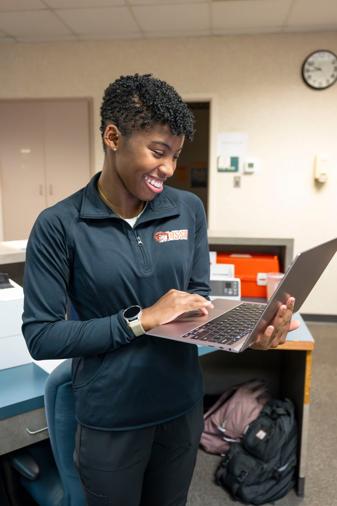

MCST
Master
of Science
in Computer Science and Technology
5-Year (4+1) BS to MS MCST
The 4+1 program lets qualified WSSU Computer Science majors complete both degrees in five years - saving time and tuition.

Let's get you started
Tell us a little about yourself and our graduate team will reach out soon.
Innovators.
Problem-Solvers.
Visionaries.
- Evening classes
- 14:1 student-to-faculty ratio
- Faculty mentorship
- Real-world projects
- State-of-the-art labs
One Degree. Multiple Career Paths.
- Cybersecurity Manager
- Data Scientist
- Senior Software Developer
- Network Architect
- Researcher or Educator
job or doctoral placement rate
projected growth in computing careers
B.S.-M.S. option for qualified students
Lead Every Room
Gain the skills, confidence, and real-world opportunities to advance your career through courses in cryptography, database management, hardware security and gaming technology.
Affordability without Compromise
Competitive tuition and financial aid options puts your graduate degree within reach.
Depart to Serve
The Experts & Support Every Community Deserves.
Join WSSU's "Ramily" network of 24,000+ alumni and build lasting professional connections through corporate partnerships and the Association for Computing Machinery.
Let's Find a Path That Fits You